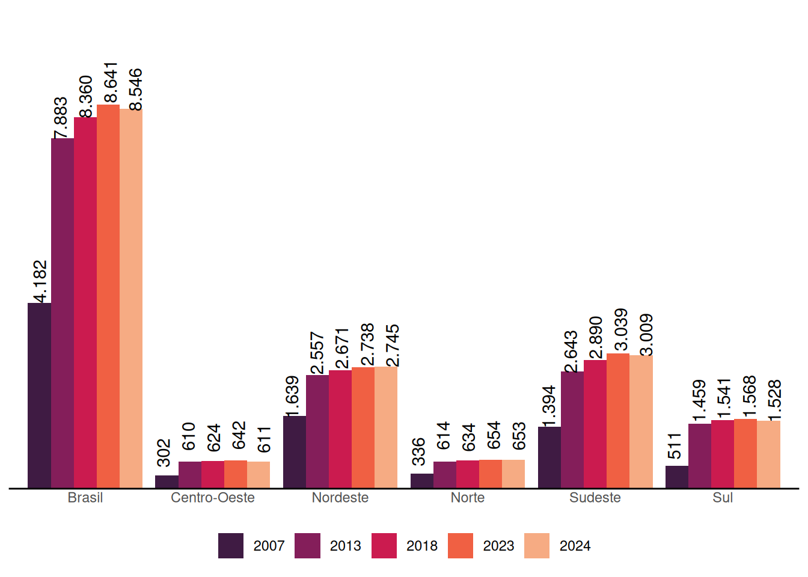
3 Unidades do SUAS
Este capítulo apresenta informações sobre as unidades físicas do SUAS e sua evolução ao longo do tempo, contemplando as seguintes informações: quantidade de unidades administrativas da rede socioassistencial, informações sobre acessibilidade, situação do imóvel e disponibilidade de equipamentos.
3.2 Centros de Convivência
Os Centros de Convivência são unidades que executam o Serviço de Convivência e Fortalecimento de Vínculos (SCFV) e integram a rede de Proteção Social Básica. A evolução do quantitativo dessas unidades ao longo da série histórica iniciada em 2014 revela relativa estabilidade, apesar das oscilações observadas entre os anos. Em 2024, o país registrou 7.946 Centros de Convivência, resultado inferior ao observado em 2023, mas ainda próximo ao número indicado no início da série (Gráfico 3.9).
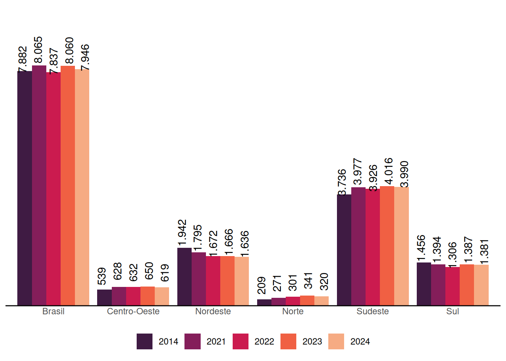
Os Centros de Convivência podem ser unidades públicas ou vinculadas a entidades de assistência social inscritas nos Conselhos de Assistência Social do Município ou do Distrito Federal. Em 2024, a participação das unidades governamentais e não governamentais manteve-se estável em relação ao ano anterior, com 43% e 57% do total, respectivamente (Gráfico 3.10).
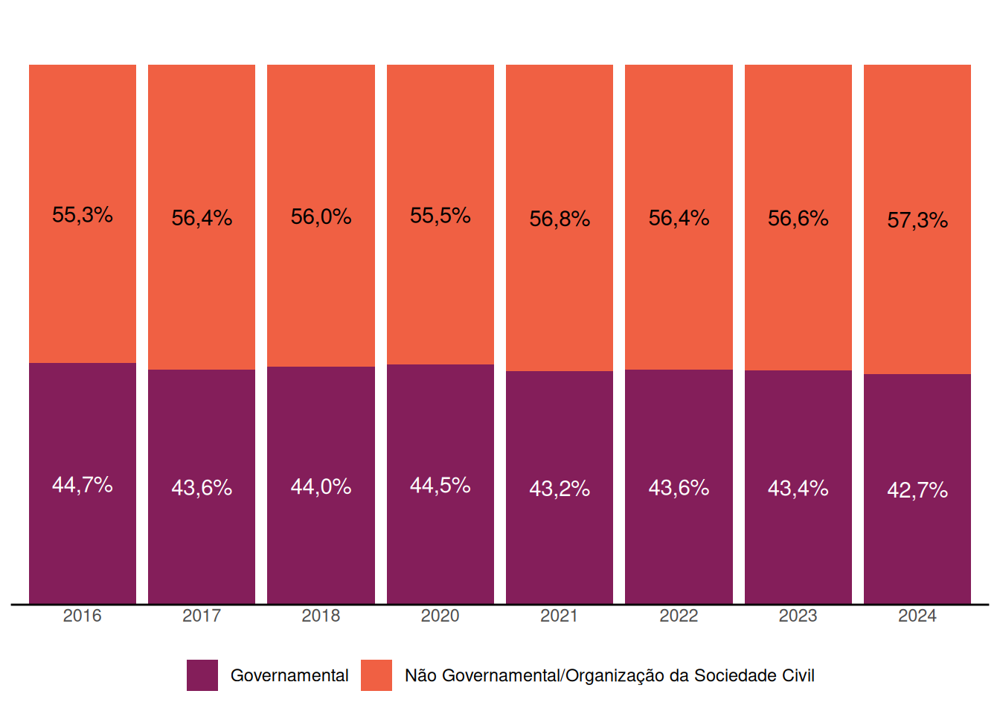
3.4 Centro de Referência Especializado para População em Situação de Rua (Centro POP)
Os Centros de Referência Especializados para População em Situação de Rua (Centros POP) são unidades públicas estatais destinadas ao atendimento especializado de pessoas em situação de rua, ofertando serviços no âmbito da Proteção Social Especial de Média Complexidade e contribuindo para o acesso a direitos e para o fortalecimento de vínculos sociais e comunitários.
Em 2024, o Censo SUAS registrou 255 Centros POP em funcionamento no país, o que representa acréscimo de nove unidades em relação a 2023. Embora o crescimento tenha se concentrado nas Regiões Nordeste, Sudeste e Sul, observa-se estabilidade no Centro-Oeste e leve redução na Região Norte, que passou de 12 para 11 unidades. Ainda assim, o resultado nacional indica continuidade da expansão gradual dessa oferta especializada no país (Gráfico 3.17).
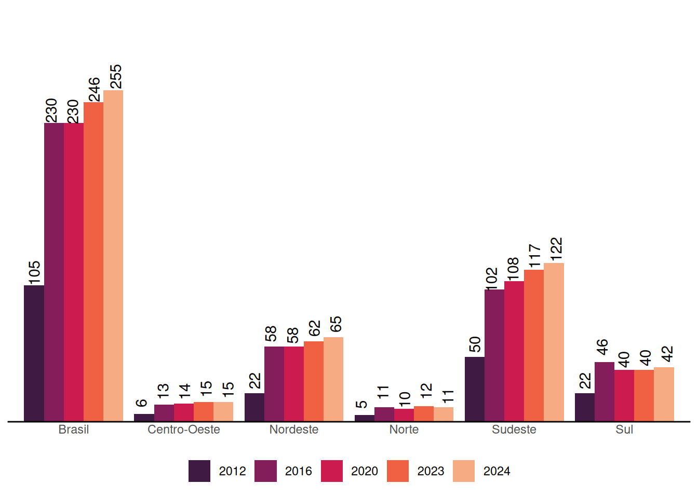
Observamos no Gráfico 3.18 que a oferta de Centros POP está fortemente concentrada nos municípios de maior porte populacional. Não há registros dessas unidades em municípios de Pequeno Porte I ou II e, entre os de Médio Porte, 95% não possuem Centro POP. Mesmo nos municípios de Grande Porte, 40% não contam com essa oferta, enquanto 59% possuem apenas uma unidade. Nas Metrópoles, por sua vez, observa-se maior presença e diversificação da rede: 53% possuem de 2 a 3 Centros POP, 32% contam com uma unidade e 16% registram mais de três unidades. Em nível nacional, 96% dos municípios não possuem Centro POP, evidenciando a concentração desse serviço especializado em centros urbanos mais populosos e com maior presença da população em situação de rua.
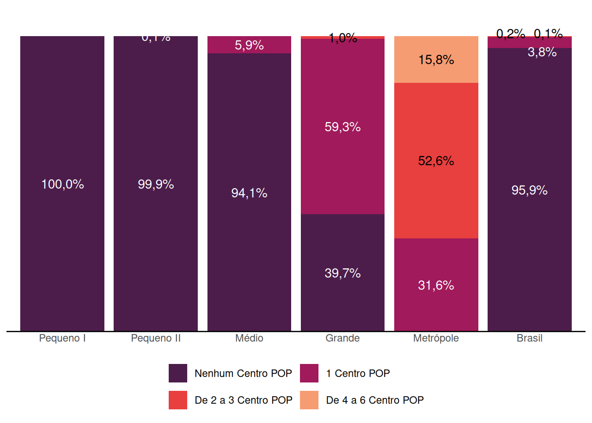
Considerando as condições de acessibilidade segundo a situação do imóvel onde funciona o Centro POP (Gráfico 3.19), observa-se comportamento semelhante ao identificado nos CRAS (Gráfico 3.6). Os Centros POP instalados em imóveis próprios apresentam os melhores indicadores de acessibilidade, ao passo que os localizados em imóveis alugados registram os menores percentuais de adequação às condições analisadas.
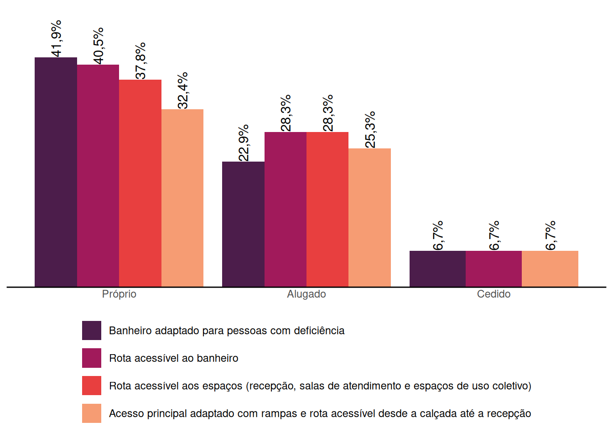
Registra-se, em 2024, o atingimento de 100% dos Centros POP no Brasil de computadores com acesso à internet, conforme mostra o Gráfico 3.20.
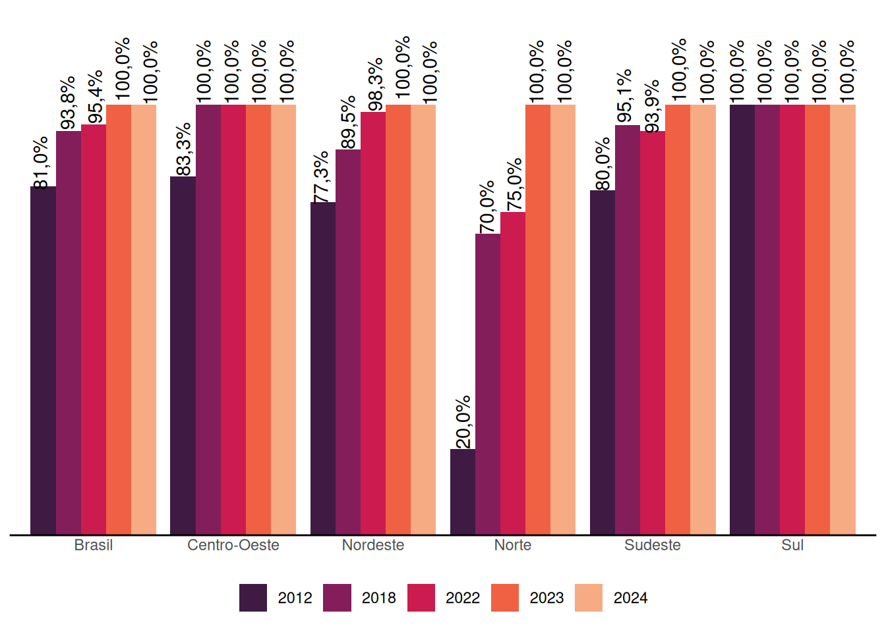
3.5 Centro-Dia
Os Centros-Dia são unidades públicas especializadas que ofertam atendimento a pessoas com deficiência em situação de dependência e suas famílias, no âmbito da Proteção Social Especial de Média Complexidade. Esses equipamentos desenvolvem ações voltadas ao fortalecimento da autonomia, à ampliação da participação social dos usuários e ao apoio às famílias e cuidadores, contribuindo para a prevenção de situações de isolamento, negligência e institucionalização.
Em 2024, manteve-se a trajetória de expansão gradual do número de Centros-Dia no país, conforme apresentado no Gráfico 3.21. O crescimento observado concentrou-se principalmente nas Regiões Sudeste e Sul, que registram aumento no quantitativo de unidades em relação aos anos anteriores, contribuindo para a ampliação dessa oferta no território nacional.
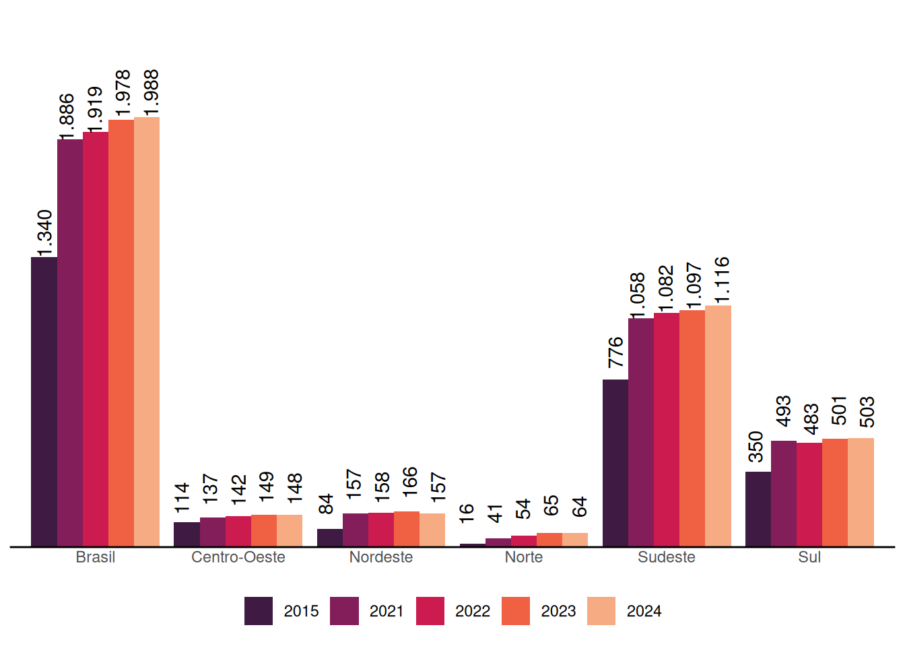
Registra-se no Censo SUAS, desde o início da série histórica, que os Centros-Dia são, majoritariamente (92%), Organizações da Sociedade Civil (OSC), conforme o Gráfico 3.22.
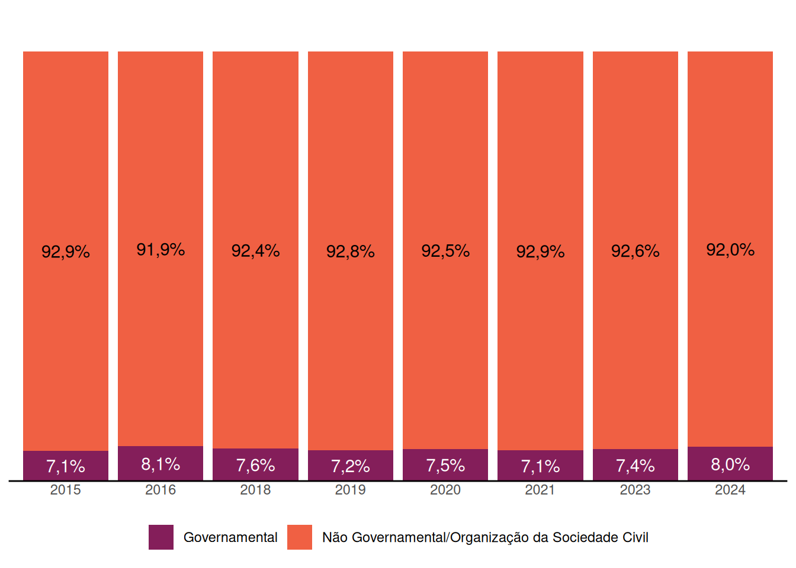
As condições de acessibilidade dos Centros-Dia constituem aspecto de especial relevância, considerando que esses equipamentos são voltados ao atendimento de pessoas com deficiência. Conforme apresentado no Gráfico 3.23, observa-se que os indicadores de acessibilidade registraram leve aumento entre 2023 e 2024, sinalizando avanços, ainda que modestos, nas condições de acesso físico das unidades.
Apesar dessa evolução, os percentuais observados nos Centros-Dia permanecem inferiores aos registrados nos CRAS (Gráfico 3.5) em todos os itens analisados. Esse resultado merece atenção diante das características do público atendido por essas unidades, para o qual a eliminação de barreiras arquitetônicas e a garantia de acessibilidade constituem condições fundamentais para o acesso e a permanência nos serviços ofertados.
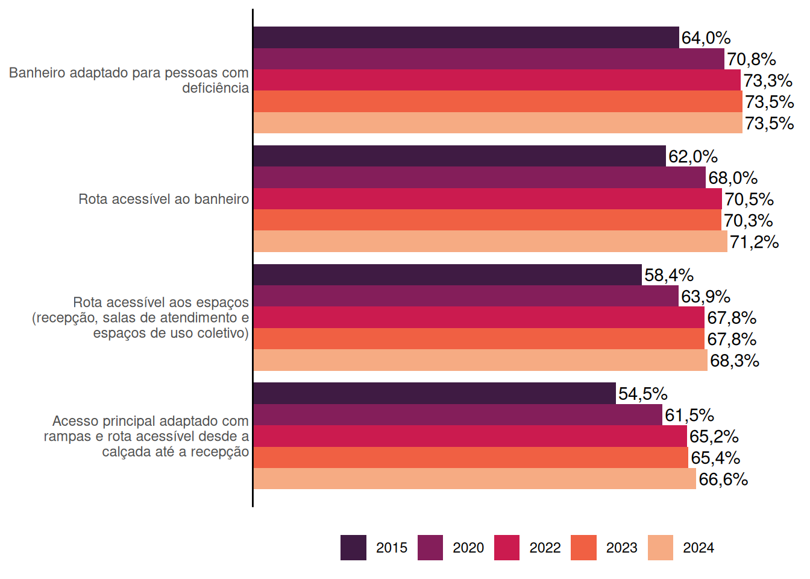
Em relação às outras adaptações voltadas à acessibilidade nos Centros-Dia, observa-se, no Gráfico 3.24, comportamentos distintos entre os diferentes recursos e tecnologias assistivas ao longo dos anos.
As adaptações e tecnologias assistivas destinadas às pessoas com deficiência intelectual e às pessoas com autismo permanecem como as mais frequentes entre as unidades, embora tenham registrado redução de um ponto percentual em 2024, alcançando 31% dos Centros-Dia.
Em patamar relativamente estável, encontram-se as adaptações e estratégias para assegurar a acessibilidade às pessoas com deficiência auditiva/surdas e às pessoas com deficiência visual, presentes em 11% das unidades.
Já o suporte de profissional com conhecimento em LIBRAS mantém a trajetória de queda, reduzindo-se para 19% das unidades em 2024. O mesmo ocorre com a disponibilização de materiais em Braille, cuja presença permaneceu em 12% dos Centros-Dia.
Por outro lado, a existência de pisos táteis para sinalização e orientação de pessoas com deficiência visual apresenta crescimento contínuo, alcançando 14% das unidades em 2024.
Por fim, o suporte por meio de leitores de tela para pessoas com deficiência visual interrompeu, em 2024, a tendência de redução observada nos anos anteriores, passando a estar presente em 9,5% dos Centros-Dia.
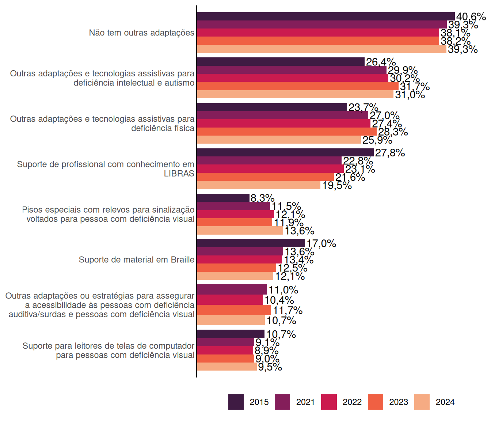
3.6 Unidades de Alta Complexidade
As Unidades de Acolhimento integram a Proteção Social Especial de Alta Complexidade e destinam-se ao atendimento de pessoas e famílias que se encontram com vínculos familiares e comunitários rompidos ou fragilizados, em situação de abandono, ameaça ou violação de direitos. Esses serviços têm como finalidade assegurar proteção integral, oferecendo acolhida, condições de moradia, apoio para o fortalecimento de vínculos e a construção de novos projetos de vida, de modo a garantir a segurança de acolhida e a proteção social dos usuários.
Os dados do Censo SUAS 2024 mostram que a disponibilidade desses serviços está diretamente relacionada ao porte populacional dos municípios. Todas as Metrópoles registram mais de dez Unidades de Acolhimento, evidenciando maior capacidade de oferta da proteção de alta complexidade. Em contrapartida, 76% dos municípios de Pequeno Porte I informaram não possuir nenhuma unidade de acolhimento (Gráfico 3.25). Nos municípios de Pequeno Porte II também predomina a ausência desse serviço, enquanto nos municípios de Porte Médio a maior concentração está entre duas e três unidades de acolhimento (42%) e, nos municípios de Grande Porte, entre quatro e seis unidades (34%).
Esse cenário reflete as características da organização da Proteção Social Especial no SUAS. Em municípios de menor porte, a reduzida escala populacional e as especificidades da demanda tornam mais desafiadora a manutenção de serviços de alta complexidade com oferta própria, reforçando a importância da regionalização. Nesse sentido, a Resolução CNAS nº 31/2013 estabelece parâmetros para a oferta regionalizada e a expansão qualificada dos serviços de acolhimento para crianças e adolescentes, atribuindo aos Estados papel central na coordenação e organização dessa oferta, de forma a assegurar o acesso à proteção integral independentemente do porte do município de residência.
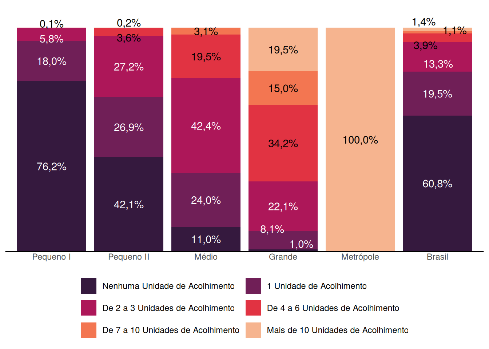
Quanto à natureza das Unidades de Acolhimento, registra-se que a maioria são Organizações da Sociedade Civil (OSC), e os percentuais das que são OSC e das que são governamentais permanecem relativamente estáveis ao longo dos anos, sendo que em 2024, 64% eram Organizações da Sociedade Civil e 36% eram governamentais (Gráfico 3.26).
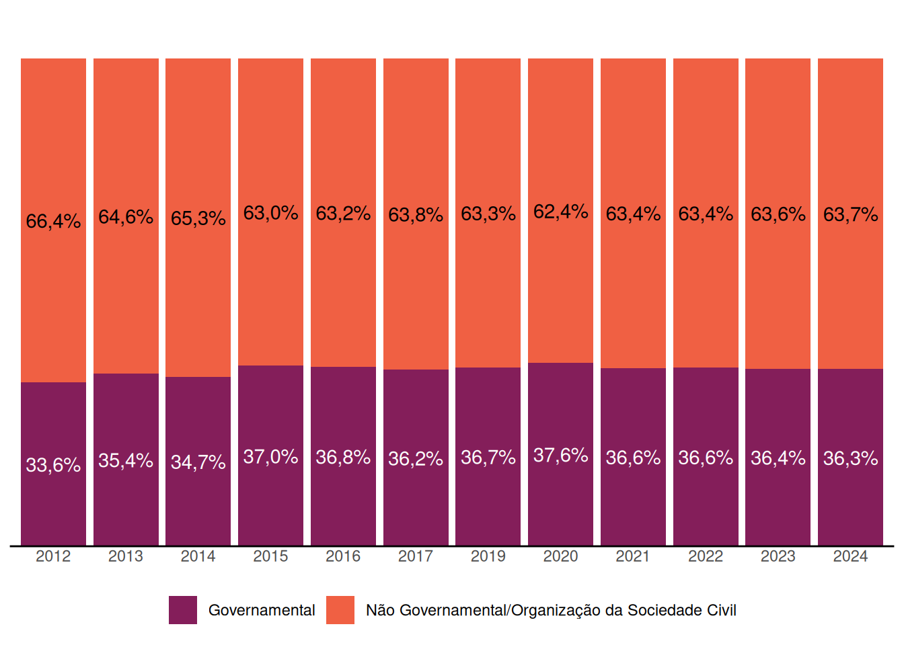
No que se refere às condições de acessibilidade das Unidades de Acolhimento, observa-se em 2024 a continuação do processo de aumento gradual do percentual de unidades que atendem a essas condições, conforme visto no Gráfico 3.27.
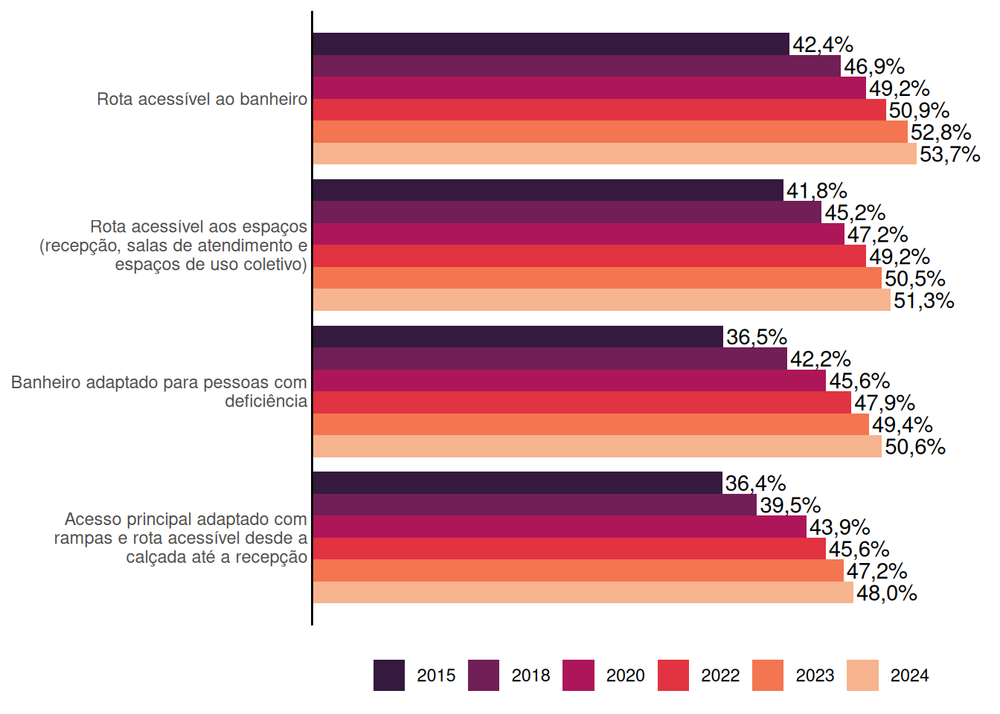
Quanto à existência de computadores com acesso à internet, manteve-se em 2024 o registro da totalidade (100%) das Unidades de Acolhimento tendo este recurso, conforme o Gráfico 3.28.
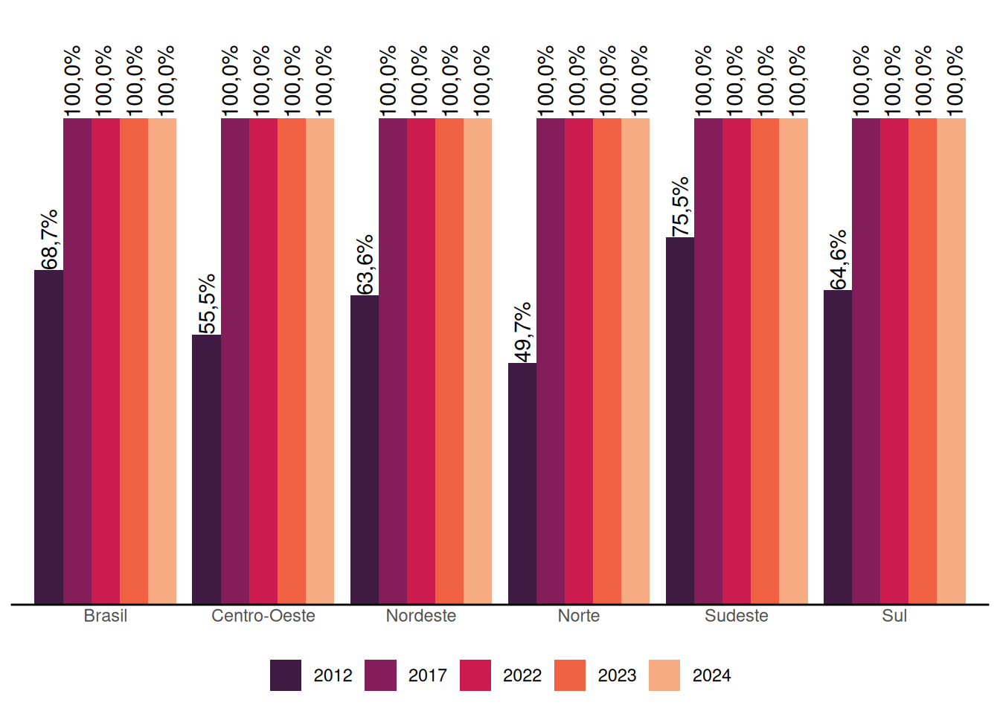
3.7 Unidades do Cadastro Único
A quantidade de Postos exclusivos de Cadastro Único vem crescendo desde o início da série histórica no Censo SUAS em 2020 e, atualmente, possui total de 3.094 unidades em nível nacional, conforme mostra o Gráfico 3.29.
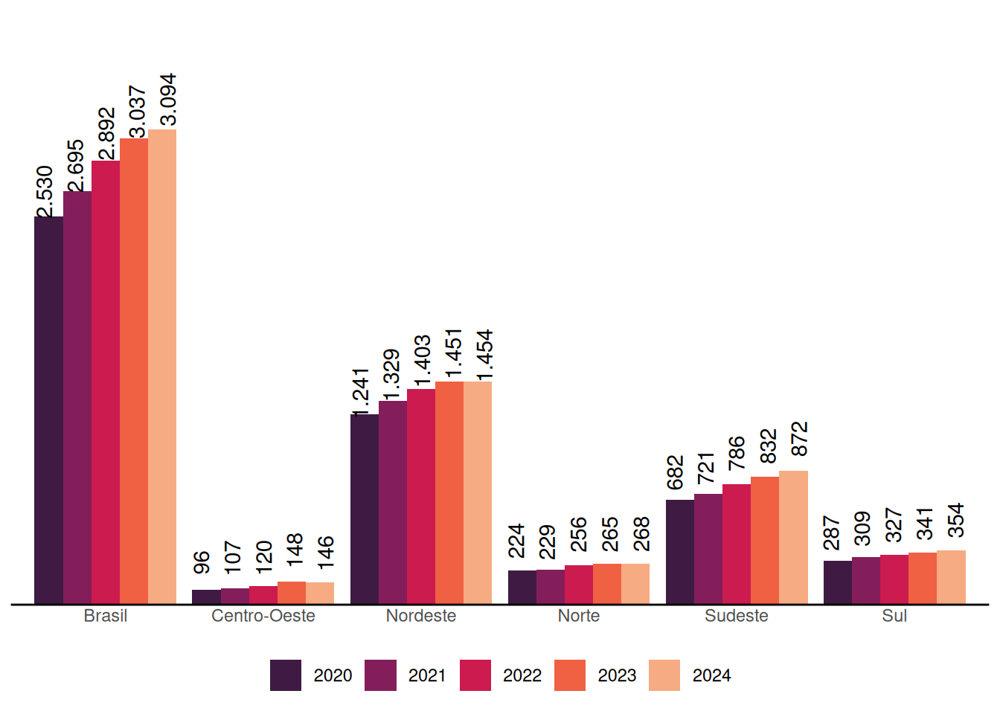
O Gráfico 3.30 mostra que a maioria dos Postos de Cadastro Único funciona na sede da Secretaria de Assistência Social ou órgão congênere. No entanto, esse percentual vem apresentando trajetória de queda, alcançando 57% em 2024. Por outro lado, a proporção de unidades que funcionam em postos exclusivos para atendimento do Cadastro Único tem aumentado ao longo dos anos, atingindo 28% em 2024.
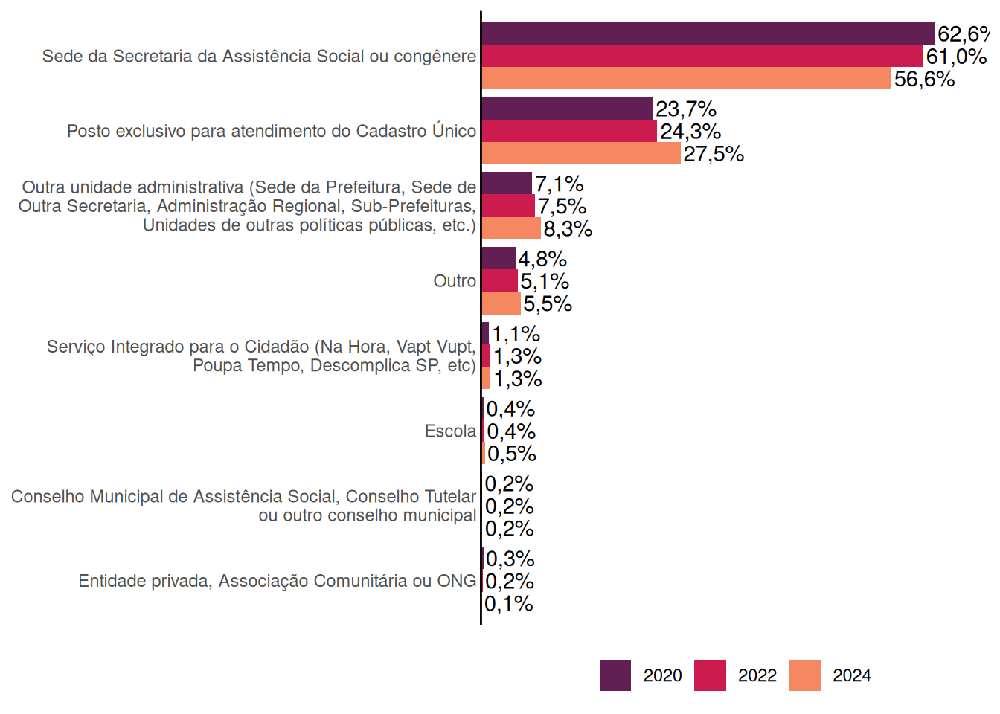
Os percentuais de Postos de Cadastro Único com condições de acessibilidade apresentaram crescimento ao longo dos anos, atingindo relativa estabilidade de 2023 para 2024 (Gráfico 3.31).
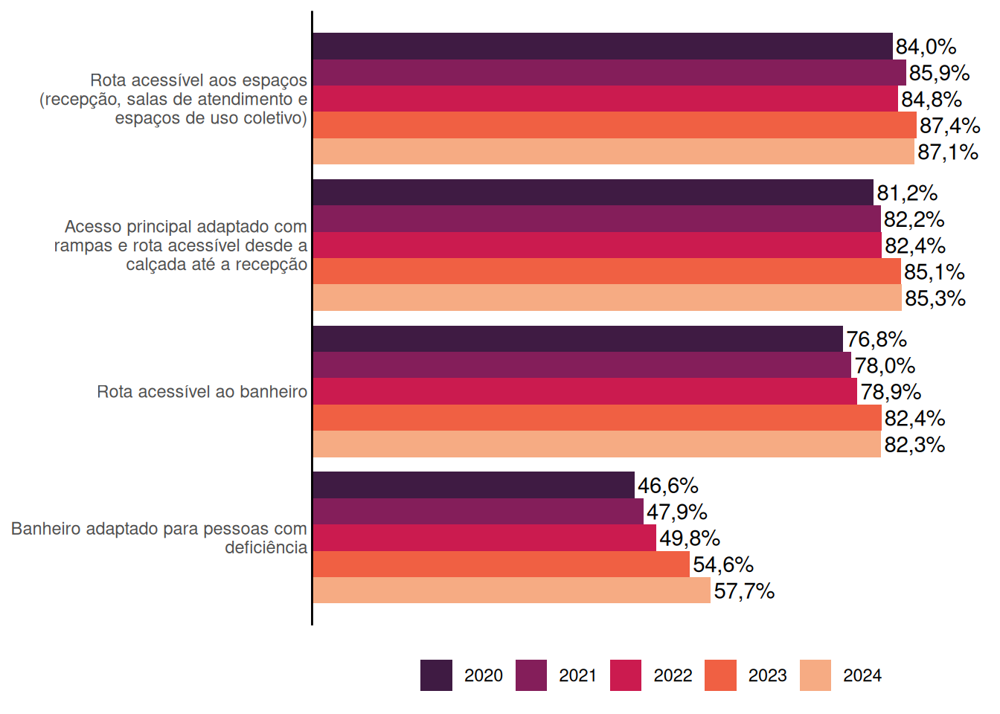
Nas condições de acessibilidade dos Postos de Cadastro Único segundo a situação dos imóveis constata-se a relação de maiores percentuais de atendimento a condições de acessibilidade nos imóveis próprios e menores percentuais nos imóveis alugados e cedidos (Gráfico 3.32).
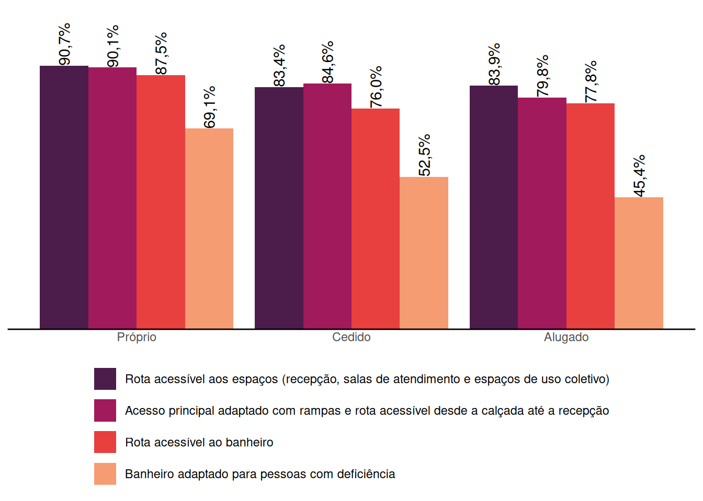
Em relação à disponibilidade de computadores com acesso à internet nos Postos de Cadastro Único, observa-se uma redução desse recurso tanto no cenário nacional quanto nas diferentes regiões do país, conforme apresentado no Gráfico 3.33.
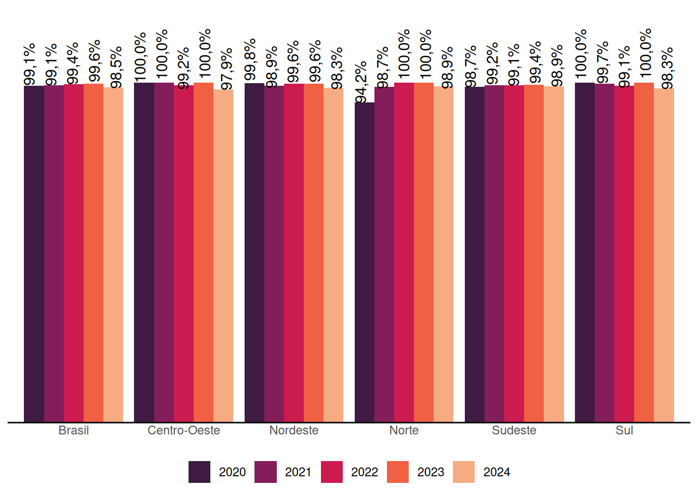